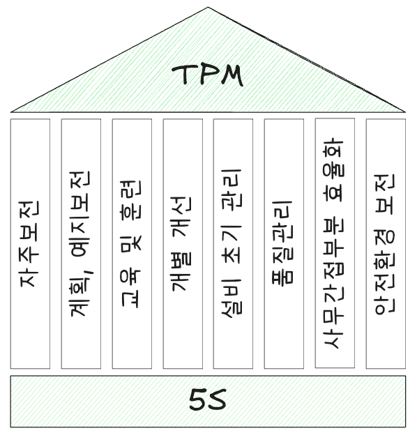

flowchart TD 1["**Preventive** Maintenance<br>예방보전, 1951"] 2["**Productive* Maintenance<br>생산보전, 1960대"] 3["**Total Productive** Maintenance<br>종합적 생산보전, 1971"] 4["**Total Productivity** Maintenance<br>종합적 생산성 관리, 1989"] 1 --> 2 --> 3 --> 4
설비보전 관리
설비보전
시대적 제조 산업 변화에 따라 노동 집약에서 고가 설비 산업 중심으로 변화되면서 설비 보전 활동이 중요하게 되었다. 1951년 미국 설비 보전 전문가 중심으로 시행하던 예방 보전(PM, preventive maintenance) 개념을 1971년 일본에서 도입하면 종합적 생산성 관리로 발전하였다.
예방보전과 종합적 생산보전, 그리고 종합적 생산성 관리를 요약하면 다음과 같다.
| 구분 | Preventive Maintenance | Total Productive Maintenance |
|---|---|---|
| 추진조직 | 보전 전문가 | 중복 소집단 |
| 추진방식 | 전문가 중심 | 현장 사원 교육을 통한 현장 개선 |
| 방법론 | 전문가 지식 | 현장 경험 + 비정화된 로드맵 |
| 추진영영 | 자재/설비 | 제조, 자재/설비 |
| 구분 | 종합적 생산보전 (Total Productive Maintenance) | 종합적 생산성 관리 (Total Productivity Maintenance) |
|---|---|---|
| 목표 | 설비 효율을 최고로 하는 종합적 효율화 | 생산시스템 효율 극한을 추구하는 기업 체질 구축 |
| 대상 범위 | 설비 생애 전반 | 생산시스템 생애 전반 |
| 핵심 지향점 | 설비 효율 극대화 및 PM 시스템 확립 | “재해 제로, 불량 제로, 고장 제로” 등 로스 제로 지향 |
| 참여 부문 | 계획부문, 사용부문, 보전부문 등 | 생산, 개발, 영업, 관리 등 모든 부문 |
| 참여자 | 최고 경영자부터 현장 작업자까지 전원 참여 | 최고 경영자부터 현장 작업자까지 전원 참여 |
| 추진 방법 | 중복 소집단 활동(소집단 자주 활동) | 중복 소집단 활동을 통한 로스 제로 달성 |
TPM(전사적 생산보전)
TPM(Total Productive Maintenance)은 설비에 대한 보전 활동 전체 체계를 확립하고, 계확/사용/보전 부문에 있어 전체 인원이 참여하는 중복 소집단 활동을 통해 설비 효율을 최대화함을 목표로 한다.
flowchart LR
subgraph sg1[TPM]
예방보전
제로지향
소집단활동
end
- 예방보전(preventive maintenance)
-
- 예방 조건 확립(문제 파악, 미연에 방지)
- 물리적, 심리적 결함 배제
- 강제 열화 배제
- 만성 불량 박멸
- 고유 수명 연장
- 제로지향(zero defect)
-
- 경쟁사 수준과 관계없이 제로 지향으로 간다면 경쟁에서 승리
- 경쟁사도 제로 지향이면 스피드가 승부 관건
- 소집단활동(small group activity)
-
- 전원 참여 경영
- 조직 구성원 능력을 향상
- 의욕을 갖도록 세포조직 활성화
- 조직 성과 극대화
TPM 장단점은 다음과 같다.
| 장점 | 단점 |
|---|---|
| 자주보전, 개별개선, 품질보전 활동을 통해 지속적인 효율 향상을 꾀하고 설비 고장이 줄어 들면서 제품 품질이 향상되며 근무 환경이 개선되어 종업원 만족도가 향상 | 전체 최적화보다는 부분 최적화 관점에서 수행되고 있다는 점과 객관적인 데이터 분석보다는 현장 경험과 노하우를 바탕으로 문제를 해결하려는 경향 |
TPM 8대 활동

TMS 활동 기반이 되는 5S는 3정 5S 내용을 참고한다.
초기 생산부분에 있어 TPM은 아래 5가지 활동을 중심으로 전개하였다.
- 설비 효율화 개별 개선
- 자주 보전 체계 구축
- 보전 부문 계획 보전 체제 구축
- 운전, 보전 교육 훈련
- 제품 및 설비 초기 관리 체제 구축
이후 생산 외 부문으로 확산되면서 아래 3가지 활동이 추가되었다.
- 품질 보전 체제 구축
- 관리 간접 부문 효율화 체제 구축
- 안전, 위생과 환경 관리 체제 구축
각 활동과 주요 내용은 다음과 같다.
| 활동 | 주요 내용 |
|---|---|
| 자주보전 | 작업자 스스로 정해진 기준에 따라 설비 유지, 관리를 실시하기 위한 체제 구축 |
| 계획, 예지보전 | 보전 부문을 중심으로 한 활동으로계획 보전 체계를 구축 |
| 교육, 훈련 | TPM 활동을 수행하기 위해 필요한 지식, 기능, 태도를 습득 |
| 개별 개선 | 현장 불합리 및 생산효율화를 저해하는 각종 로스를 제거하기 위한 소개선 및 테마 활동 (고장로스, 준비교체/조정로스, 공구 교환 로스, 순간 정지/공전 로스, 속도 저하로스, 불량/수정로스, 초기 유동 로스) |
| 설비 초기 관리(MP) 초기유동 관리 |
생산기술 부문을 중심으로 한 활동, 설비 도입 시기에 초기 트러블 발생을 방지하는 활동 |
| 품질관리 | 만성 불량 zero 지향, 불량을 만들지 않는 조건 설정 및 조건 관리하는 활동 |
| 사무간접 부분 효율화 | 관리, 사무, 지원 부문에 있어 사무 효율화 개선과 사무 환경 개선을 추진하는 활동 |
| 안전 환경 보전 | 안전 및 환경오염 위해 요소 박멸 및 안전 환경 시스템을 구축 |
TPM(전사적 예방보전)
TPM(Total Preventive Maintenance, 전사적 예방보전)은 설비와 장비의 가용성을 극대화하고 생산성을 높이기 위해 전사적으로 추진하는 보전 활동이다. TPM은 설비의 고장과 불량을 예방하고, 설비 수명을 연장하는 것을 목표로 한다.
- TPM의 특징
-
- 전사적 참여: 경영진부터 현장 작업자까지 모든 구성원이 보전에 참여한다.
- 예방 중심: 설비 고장을 사전에 예방하고 문제 발생을 최소화한다.
- 자주 보전: 작업자가 일상적으로 설비를 점검하고 유지한다.
- 설비 효율성 향상: 설비의 가동률과 생산성을 극대화한다.
- 교육 및 훈련: 설비 보전 및 관리 기술에 대한 교육을 지속적으로 실시한다.
- 전사적 참여: 경영진부터 현장 작업자까지 모든 구성원이 보전에 참여한다.
- TPM의 효과
-
- 설비 가동률 향상
- 생산성 증가 및 품질 향상
- 설비 고장 및 가동 중단 시간 감소
- 설비 수명 연장 및 유지 비용 절감
- 설비 가동률 향상
생산보전과 예방보전
전사적 생산보전과 전사적 예방보전 간 비교는 아래와 같다.
| 비교 항목 | Total Productive Maintenance (TPM) | Total Preventive Maintenance (TPvM) |
|---|---|---|
| 목적 | 설비의 종합적인 효율 향상과 생산성 극대화 | 설비 고장 예방과 설비 수명 연장 |
| 주요 특징 | 설비 효율성 극대화를 위한 8대 기둥 활동 | 사전 점검 및 부품 교체를 통한 설비 유지 |
| 참여 범위 | 전사적 참여(경영진부터 작업자까지) | 주로 설비 보전팀과 기술 전문가 |
| 중점 활동 | 자주 보전, 개선 활동, 품질 보전 등 | 정기 점검, 예지 보전, 예방 교체 |
| 설비 관리 방식 | 설비 고장을 예방하는 동시에 설비 가동률을 최대화 | 설비 고장 방지 및 안정적인 가동 유지 |
| 초점 | 설비와 생산성을 동시에 개선 | 설비의 장기적인 안정성 확보 |
- 주요 차이점 요약
-
- TPM은 설비 고장 방지뿐 아니라 생산성 향상까지 목표로 하며, 전사적 참여를 강조한다.
- TPvM는 설비 고장을 사전에 예방하고, 설비 수명을 연장하는 데 집중한다.
- 공통점
-
- 설비의 안정성과 효율성 향상을 목표로 한다.
- 예방적 활동을 통해 설비 고장을 최소화한다.
- 설비 유지 및 관리에 있어 체계적인 접근 방식을 따른다.
생산보전(PM)
생산보전(productive maintenance)은 설비 수명주기(life cycle)를 대상으로 하여 생산성을 높이기 위해 실시하는 가장 경제적인 보전활동이다. 생산보전은 설비가 언제라도 기능을 발휘할 수 있도록 하는 목적으로 최소 비용을 수단으로 수행하는 활동이다. 아래와 같은 수단을 통해 목적을 달성할 수 있다.
- 설비관리 목표
-
- 신뢰성: 고장 없이 신뢰할 수 있는 것
- 보전성: 고장이 발생하더라도 단기간에 복구 가능한 것
- 경제성: 신뢰성, 보전성 향상에 최소 비용을 사용하는 것
flowchart LR
subgraph sg2[비계획보전]
비계획보전 --> 긴급보전
end
subgraph sg1[계획보전]
direction LR
subgraph sg11[유지활동]
direction LR
예방보전
사후보전
end
subgraph sg12[개선활동]
direction LR
개량보전
보전예방
end
계획보전 --> 예방보전 & 사후보전 & 개량보전 & 보전예방
end
생산보전 --> 계획보전 & 비계획보전
예방보전 --> 1["정기보전(TBM)"] & 2["예지보전(CBM)"] & 3["일상보전"] & 4["정기적인 분해 점검"]
- 계획보전(SM, scheduled/planned maintenance)
-
- 예방 보전을 위해 어떤 일정 기간을 정해서 정기적으로 기계 보수, 보전 작업을 실시
- 예방보전(PM, preventive maintenance)
-
- 점검 기간이나 설비 상태에 따라 보전 활동 실시
- 정기 보전(TBM, time based maintenance)
-
- 정기적인 점검과 수리로 고장을 미연에 방지해 설비 수명을 연장하는 활동
- 예지보전(PM, predictive maintenace 또는 CBM, condition based maintenance)
-
- 설비 상태에 따라 설비 보전 활동
- 사후보전(BM, break down maintenance)
-
- 설비나 장치가 기능저하 또는 기능정지(고장정지)된 뒤에 보수, 교체를 실시하는 것으로 예방보전(사전 처리)을 하기 보다도 사후 보전하는 편이 경제적인 기기에 대해 적용
- 개량보전(CM, corrective maintenance)
-
- 설비 신뢰성, 보전성, 안전성 등의 향상을 목적으로 현 설비의 열악한 부분을 계획적이고 적극적으로 개선하여 열화 및 고장을 감소시키도록 보전 및 수리가 쉽도록 하는 활동
- 보전예방(MP, maintenance prevention)
-
- 설비를 새로 계획, 설계하는 단계에서 보전 정보나 새로운 기술을 채용해서 신뢰성, 보전성, 경제성, 조작성, 안전성 등을 고려하여 보전비나 열화 손실이 적도록 처음부터 보전이 필요하지 않도록 설계하는 방법
- TBM(Time-Based Maintenance)
-
- TBM은 일정한 주기나 시간 간격을 기준으로 장비나 시스템을 정비하는 예방 유지보수 방식이다.
- 주요 특징: 사용 시간이나 경과 시간을 기준으로 계획적으로 유지보수를 수행한다.
- 장점: 간단하고 예측 가능하며 유지보수 계획을 수립하기 쉽다.
- 단점: 장비 상태와 관계없이 일정에 따라 유지보수를 진행하기 때문에 과도한 유지보수나 불필요한 작업이 발생할 수 있다.
- CBM(Condition-Based Maintenance)
-
- CBM은 장비의 상태를 실시간으로 모니터링하고, 상태 데이터에 기반하여 필요한 경우에만 유지보수를 수행하는 방식이다.
- 주요 특징: 센서, 진동 분석, 열화상 검사 등 다양한 기술을 사용해 장비의 상태를 측정한다.
- 장점: 장비의 실제 상태에 따라 유지보수를 진행하기 때문에 불필요한 작업을 줄이고 비용을 절감할 수 있다.
- 단점: 초기 도입 비용이 높고, 시스템의 복잡성이 증가할 수 있다.
- TBM과 CBM 간 주요 차이점
-
구분 TBM (Time-Based Maintenance) CBM (Condition-Based Maintenance) 기준 시간 기준 장비 상태 기준 효율성 장비 상태와 관계없이 정기 유지보수 장비 상태에 맞춰 최적화된 유지보수 비용 초기 비용 낮음, 장기적으로 비효율 초기 비용 높음, 장기적으로 비용 절감
강제열화와 자연열화
flowchart TB 열화 --- 강제열화 & 자연열화
| 구분 | 강제열화(Forced Deterioration) | 자연열화(Natural Deterioration) |
|---|---|---|
| 정의 | 부적절한 사용, 유지보수 부족, 조작 실수 등으로 인해 설비가 정상적인 수명보다 빨리 열화되는 현상 | 시간이 지남에 따라 자연적인 마모, 부식, 피로 등의 요인으로 설비가 점진적으로 열화되는 현상 |
| 원인 | 잘못된 조작, 유지보수 미흡, 과부하 운전, 오염물 누적, 윤활 부족 등 | 재료의 노후화, 금속 피로, 부식, 열화, 환경적 요인(온도, 습도 등) |
| 예방 방법 | 적절한 교육, 정기 점검, 올바른 조작 방법 준수, 윤활 및 청소 강화 | 예방 보전(Preventive Maintenance), 정기적인 부품 교체, 환경 관리 |
| 예시 | • 기계 과부하로 인한 조기 마모 • 윤활 부족으로 인한 베어링 손상 • 부적절한 조작으로 인한 부품 파손 |
• 장기간 사용에 따른 금속 부품 피로 • 플라스틱 부품의 자연적인 경화 및 균열 • 공기 중 습기로 인한 내부 부식 |
강제열화는 관리 부주의로 인해 발생하는 경우가 많으므로, 올바른 운영 및 유지보수를 통해 예방이 가능하다. 반면 자연열화는 피할 수 없지만, 예방 보전(Preventive Maintenance)과 예지 보전(Predictive Maintenance) 등을 통해 진행 속도를 늦출 수 있다.
돌발로스와 만성로스

| 구분 | 돌발로스 (Sudden Loss) | 만성로스 (Chronic Loss) |
|---|---|---|
| 정의 | 예기치 않게 발생하는 고장이나 문제로 인한 손실 | 지속적이고 반복적으로 발생하는 문제로 인한 손실 |
| 특징 | 갑자기 발생하여 예측 불가능함 | 지속적으로 문제 발생, 반복적이고 일정함 |
| 예시 | 전원 문제, 제어 시스템 오류, 외부 환경 변화 등 | 설비 부품 마모, 설비 설계 문제 등 |
| 개선 방법 | - 예방 점검을 통해 고장을 미리 방지한다. | - 설비 디자인을 개선하여 문제를 반복적으로 발생하지 않게 한다. |
| - 안전장치나 경고 시스템을 추가하여 빠르게 대응한다. | - 정기적인 유지보수를 통해 성능 저하를 방지한다. | |
| - 훈련과 교육을 통해 작업자들이 돌발 상황에 신속하게 대응하도록 한다. | - 데이터를 분석하여 문제를 사전에 예방한다. | |
| - 낡은 부품이나 설비를 업그레이드하거나 교체한다. |
고장강도율
고장강도율은 시스템이나 장비의 고장 발생 빈도와 그에 따른 강도를 측정하는 지표로, 특정 기간 동안 고장이 발생하는 비율을 나타낸다. 이 개념은 시스템의 신뢰성, 안정성, 그리고 지속 가능한 운영에 중요한 요소로, 특히 제조업과 같은 산업 환경에서 중요한 역할을 한다. 고장강도율은 일반적으로 고장 수와 그로 인한 생산 차질 정도를 함께 고려하여 계산된다.
- 고장강도율의 주요 개념
-
- 고장 강도
시스템이나 장비에서 발생하는 고장이나 결함의 심각도를 나타내며, 이는 고장의 빈도나 영향을 기반으로 측정 - 고장강도율
일정 기간 동안 발생한 고장 사건의 수와 그로 인한 생산성 손실, 품질 저하 등을 종합적으로 고려한 지표로 즉, 고장강도율은 시스템의 안정성과 신뢰성에 대한 중요한 척도로 사용
- 고장 강도
고장강도율을 개선하려면 시스템의 신뢰성을 높이고, 고장 발생 빈도를 줄이기 위한 여러 가지 방법을 적용해야 한다. 이를 위한 주요 개선 방법은 다음과 같다.
- 예방 유지보수 강화
- 정기적으로 시스템이나 장비의 상태를 점검하고, 잠재적인 고장 원인을 사전에 파악하여 수리하거나 교체
- 이를 통해 예상치 못한 고장을 예방
- 자동화 시스템 도입
- 자동화된 모니터링 시스템을 통해 장비의 상태를 실시간으로 추적하고, 고장이 발생할 가능성이 있는 부분을 미리 감지하여 조치
- 자동화된 유지보수 시스템은 고장강도율을 낮추는 데 큰 도움
- 품질 관리 강화
- 생산 공정에서 발생할 수 있는 품질 문제를 줄이기 위해 품질 관리 시스템을 강화
- 품질이 높아지면 불량품으로 인한 고장이나 문제가 줄어들어 고장강도율이 개선
- 교육 및 훈련
- 작업자들에게 장비나 시스템의 정확한 사용 방법과 유지 관리 절차에 대한 교육을 제공하여 인적 오류로 인한 고장 발생 감소
- 이를 통해 고장 강도와 발생 빈도를 감소
- 예비 부품 관리
- 고장이 발생할 때 즉시 교체할 수 있도록 예비 부품을 충분히 확보하고, 교체 시간이 최소화될 수 있도록 관리
- 교체 시간 단축은 고장으로 인한 생산 차질을 줄이는 데 기여
- 고장 데이터 분석 및 개선
- 고장 발생 데이터를 분석하여 고장이 자주 발생하는 원인과 패턴을 파악
- 이를 통해 해당 문제를 해결하고 시스템을 개선하여 고장강도율을 감소
고장강도율을 개선하는 것은 생산성과 품질을 높이고, 시스템의 신뢰성을 향상시키는 중요한 과정이다. 이를 통해 기업은 안정적인 운영과 비용 절감을 동시에 달성할 수 있다.
자주보전 7단계
| 단계 | 명칭 | 활동내용 | 육성 단계 \(^{주1}\) |
|---|---|---|---|
| 1단계 | 초기 청소 | 설비 본체를 중심으로 먼지, 더러움을 완전히 없앤다. | 1단계 |
| 2단계 | 발생원, 곤란부위 대책 수립 | 먼저, 더러움 발생원, 비산 방지나 청소, 급유 곤란 부위를 개선하고 청소, 급유 시간 단축을 도모한다. | 1단계 |
| 3단계 | 청소/급유/점검 기준 작성 | 단시간으로 청소/급유/점검을 확실히 할 수 있도록 행동 기준을 작성한다. | 2단계 |
| 4단계 | 총점검 \(^{주2}\) | 점검 매뉴얼에 의한 점검기능교육과 총 점검 실시에 의한 설비 미흡을 적출 및 복원한다. | 2단계 |
| 5단계 | 자주점검 | 자주점검 체크 시트 작성, 실시로 오퍼레이션 신뢰성을 향상한다. | 3단계 |
| 6단계 | 표준화 | MTBF 분석 기록을 확실하게 해석하여 설비 개선을 꾀한다. | 3단계 |
| 7단계 | 자주관리 확립 | 4단계 |
주1: 설비에 강한 오퍼레이터 육성 단계
1. 1단계: 오퍼레이터가 설비 개선 사고 방식을 익히는 단계
2. 2단계: 오퍼레이터가 설비 기능 및 구조를 이해하는 단계
3. 3단계: 오퍼레이터가 설비 정밀도와 제품 품질 간 관계를 이해하는 단계
4. 4단계: 오퍼레이터가 설비 수리 가능한 단계
주2: 총점검 전개 방법
1. 총점검 매뉴얼 준비 - 준비활동 및 총점검 과목 및 항목 설정
2. 총점검 매뉴얼에 대한 교육 실시 - 기계요소 총점검 대상 및 부위 작성
3. 총점검 매뉴얼 보완 - 담당설비별, 부품별 총점검 매뉴얼 내용 보완 작성
4. 총점검 체크시트 작성 - 담당설비별 총점검 실시를 위한 체크시트 작성
5. 총점검 실시와 미결함 적출 및 개선 - 청소/급유/점검 기준 및 점검표 보완
6. 점검 기능 체크 - 담당설비별 기계요소 기능 체크
설비 6대 로스
- 고장 로스
-
- 돌발적, 만성적으로 발생하는 고장에 의한 로스로서, 생산량을 감소시키고 불량 발생을 야기한다.
- 대책: 강제 열화 예방, 기본조건 준수, 바른 사용조건 유지, 보전품질 향상, 응급조치 배제, 설비 약점 개선 등
- 준비작업/조정 로스
-
- 현 제품 생산종료시점에서부터 다음 제품으로 전환, 조정하고 완전한 양품이 되기까지의 시간적 로스를 의미한다.
- 대책: 치공구, 교체부품 정밀도 유지, 기준 표준화 등
- 일시정지/공운전 로스
-
- 기능상 일시적인 오류로 인해 설비가 정지하거나 공전하는 경우를 말하며, 일시정지를 줄이기 위해서는 현상을 자세히 분석하고 사소한 결함을 철저히 배제하려는 노력과 함께 제로화해야 한다.
- 대책: 현상을 명확히파악, 미결함 시정, 최적조건 파악 등
- 속도저하 로스
-
- 설계속도보다 낮은 속도로 운전하는 경우에 발생하는 로스로서, 6대 로스 가운데 효율에 미치는 영향이 크므로 원인에 대한 검토가 필요하다.
- 대책: 표준 명확화 등
- 초기수율 로스
-
- 정기수리 후, 장시간 정지 후, 휴일 후, 점심시간 후 다시 시동 시 품질이 안정되어 양품이 생산되기까지의 시간적 로스와 그 동안에 발생하는 불량이나 재작업과 같은 불량 손실을 의미한다.
- 대책: 작업조건 준수
- 불량/재작업 로스
-
- 불량이나 재작업에 따른 물량적 로스와 수정하여 양품으로 만들기 위한 시간적 로스로 정의할 수 있다.
- 대책: 만성적인 불량 현상 명확화 등
장치산업 8대 로스
장치산업 8대 로스는 다음과 같다.
| 로스 명칭 | 정의 | 단위 | 사례 |
|---|---|---|---|
| ShutDown | 연간 보전계획에 의한 SD 공사 및 정기정비 등에 의한 휴지시간 로스 | 시간(일) | SD 공사, 정기정비, 법정검사, 자주검사, 일반보수공사 등 |
| 생산조정 | 수급 관계에 의한 생산계획상 조정 시간 | 시간(일) | 생산조정정지, 재고조정정지 등 |
| 설비고장 | 설비, 기기가 규정 성능을 잃어 돌발적으로 정지하는 로스 시간 | 시간 | 펌프 고장, 베어링 파손, 축 부러짐 등 |
| 프로세스 고장 | 공정 내 화학적·물리적 물성 변화나 조업 실수 등으로 플랜트 정지 | 시간 | 누설, 먼지, 막힘, 부식, 분진비산, 조작 실수 등 |
| 정상생산 | 플랜트 Start, 정지 및 교체 때문에 발생하는 로스 | rate down | Start 후 첫 동작, 정지 전 멈춤 동작, 품질 교체에 따른 rate down |
| 비정상생산 | 플랜트 불량, 이상으로 생산 rate를 낮추는 성능 로스 | rate down | 저부하운전, 속도운전, 기준 생산 rate 이하 운전 등 |
| 품질불량 | 불량품 및 폐각품(2등급 이하 포함)으로 인한 물적·시간적 로스 | 시간, ton, 금액 | 품질표준에서 벗어난 제품으로 인한 물량 및 시간 로스 |
| 재가공 | 공정 back에 의한 리사이클 로스 | 시간, ton, 금액 | 최종 공정에서 불량품을 원류 공정에 리사이클해 합격품으로 전환 |
- 특징
-
- 각 로스는 정의, 단위, 사례로 구분해 관리함
- 시간 기반 로스와 rate 기반 성능 로스를 구분해 분석함
- 품질 로스는 단순 불량뿐 아니라 재가공까지 포함해 손실을 파악함
- 각 로스는 정의, 단위, 사례로 구분해 관리함
설비 보전 지표
대표적인 설비 보전 지표로 MTTR, MTBF, MTTF가 있다. 위 지표는 설비 보전 신뢰성 지표로 사용되고 설벼 효율을 극대화 하기 위한 척도로도 사용된다.
MTTR
MTTR(mean time to repair)는 평균 수리 시간(평균 고장/장애 복구 시간)으로서 설비 고장이 발생했을 때부터 다시 동작하는데까지 걸리는 시간이다.
\[ MTTR = \frac{설비 정지 총 시간}{설비 정지 횟수} \]
MTTR은 설비가 정상동작하지 않는 시간 총합을 측정하고 총 건수로 나눈 값으로 현장에서는 설비 보전성 지료로 사용된다.
MTBF
MTBF(mean time between failures)는 평균 무고장 시간으로 설비가 한번 고장이 발생한 뒤 같은 고장이 다시 발생할 때까지의 평균 시간이다.
\[ MTBF = \frac{정상가동총시간}{고장횟수} \]
설비 고장에 대한 대응력을 확인할 수 있는 지표로 설비 신뢰정 지표로 사용된다. MTBF는 수리 가능한 설비에 대한 지표이며, 수리가 불가한 설비나 시스템인 경우 MTTF를 사용해야 한다.
MTTF
MTTF(mean time to failures)는 수리하지 않은 부품이 사용되었을 때 시작 시점부터 고장 발생 시까지 시간을 의미한다.
\[ MTTF = 수리하지 \ 않은 \ 부품의 \ 사용 \ 시작부터 \ 고장까지 \ 시간 \]
가용도
가용도는 다음과 같이 계산된다.
\[ 가용도 = \frac{MTTF}{MTBF} \]
욕조곡선

욕조곡선(bathtube curve), 신뢰도 곡선은 고장률이 시간 변화에 따라 높은 값에서 점차 낮은 값으로 감소하는 일정한 값을 얼마동안 유지한 후 점차 다시 높아지는 제품 수명을 나타내는 곡선이다. 신뢰도에서 고장률이 마치 욕조처럼 생겼다고 붙여진 명칭이다.
- DFR, decrease failure rate
-
- 초기고장, 감소형
- 품질관리 미비로 발생할 수 있는 고장으로 작업시작 전 점검, 시운전 등으로 사전 예방이 가능한 고장
- debugging 기간, burn-in 기간을 통해 결함 탐지 및 안정화
- CFR, constant failure rate
-
- 우발고장, 일정형
- 예측할 수 없는 경우 발생하는 고장으로 시운전이나 점검으로 예방이 불가
- 낮은 안전계수, 사용자 과오 등
- IFR, increase failure rate
-
- 마모고장, 증가형
- 정치 일부분이 수명을 다하여 발생하는 고장
- 부식, 마모, 불충분한 정비 등
고장률
고장률(failure rate)이란 어떤 시점까지 동작하여 온 품목이 계속되는 단위시간 내 고장을 일으키는 비율을 뜻한다. 평균 고장률은 총 고장횟수를 총 동작시간으로 나눈 값이다.
\[ 평균고장률(\lambda) = \frac{r(총고장횟수)}{T(총동작시간)} = \frac{1}{MTBF} \]
여기서 MTBF(Mean Time Between Failure)는 평균고장간격으로, 즉 수리할 수 있는 시스템 또는 설비에서 고장 발생 시점부터 다음 고장 발생 시점까지의 평균 시간이다.
RAMS
RAMS(Reliability, Availability, Maintainability, Safety)는 제품 신뢰성과 안전성 평가를 위한 지표이다. 제품이나 시스템의 신뢰성, 가용성, 유지보수성 그리고 안전성을 평가한다.
flowchart TB RAMS --- 신뢰성 & 가용성 & 유지보수성 & 안전성
- 신뢰성(reliability)
-
- 제품이 일정 기간 동안 얼마나 정상적으로 동작하는지를 나타내는 지표
- 고장없이 예상대로 동작하는 능력
- 가용성(availability)
-
- 제품이나 시스템이 사용 가능한 상태에 있는 비율을 나타내는 지표
- 장애로 인한 중단 시간을 최소화하여 시스템 가동 시간을 최대한 확보하는 것이 목표
- 유지보수성(maintainability)
-
- 제품이나 시스템이 고장 났을 때 빠르게 복구 또는 유지보수를 수행할 수 있는지를 나타내는 지표
- 유지보수성이 높으면 고장 시간을 최소화하고 장애복구를 빠르게 수행 가능
- 안전성(safety)
-
- 제품이나 시스템을 사용하는 중 사용ㅈ바나 환경에 어떠한 유해한 영향도 미치지 않는 능력
- 제품 사용자와 주변 환경을 보호하는 중요한 역할
측정 방법
| 항목 | 측정방법 |
|---|---|
| 신뢰성 | MTBF, 실페 확률(특정 기간 내 고장이 발생할 확률, 과거 데이터 및 통계 기반으로 계산) |
| 가용성 | MTTR |
| 유지보수성 | 복구 시간, 유지 보수 작업 복잡성, 필요한 기술 및 장비 등을 고려하여 평가 |
| 안전성 | HAZOP(hazard and operability study), FMEA(failure modes and effects analysis), FTA(fault tree analysis) |
설비 분석 도구
PM 분석
PM(phenomena mechanism) 분석은 설비 정지시간 감소나 불량 감소를 위하여 원인 분석 도구로 사용된다. 만성 불량 등 고질적인 문제에 대하여 물리적인 핼석을 통해 문제를 개선하는 기법이다. 분석 핵심은 불량이나 문제 발생 성립 조건을 찾는데 있으며 장기간 고도로 훈련된 사람만이 이를 구사할 수 있다는 단점이 있다.

PM 분석은 다음과 같이 정리리할 수 있다.
- P
-
- phenomena, physical을 의미하며 현상을 물리적으로 해석하여
- M
-
- mechanism, 공정 및 설계 mechanism을 이해하고 현상 mechanism을 해석하여 4M(Man, Machine, Material, Method)과의 관련성을 추구하는 분석 기법이다.
즉, PM이란 만성화된 문제 현상을 원리, 원칙에 입각하여 물리적으로해석하여 불량 원인을 근본적으로 제거하고 이상적인 mechanism을 밝혀 내는 사고 방법이다.
PM 분석 절차는 다음과 같다.
| 단계 | 구분 | 실천사항 |
|---|---|---|
| 1 | 현상파악 | 현상을 4W1H 관점에서 특성을 파악하여 세분화함 (현상 특성 분석표 작성) |
| 2 | 설비 구조의 가공원리 이해 | 기계 각 부분 구조를 도해해 물건이 만들어지는 가공 원리를 인식함 (기계 구조 그림, 가공 원리 도해) |
| 3 | 현상의 물리적 해석 | 현상을 물리적인 원리와 원칙으로 설명함 (PM 분석) |
| 4 | 현상이 성립하는 조건 추출 | 현상 발생 조건을 전개하여 모든 추정 case를 정리함 (PM 분석) |
| 5 | 설비, 재료, 방법 관련성 검토 | 설비, 재료, 치공구, 가공조건과의 관련성을 검토해 인과관계 요인을 리스트업함 |
| 6 | 바람직한 모습 | 진단 항목을 추출하고, 항목별 기준·표준·현물을 검토해 바람직한 모습을 설정함 (진단 sheet 작성) |
| 7 | 현장 진단 | 바람직한 모습에서 벗어난 불합리 점을 리스트업하고, 미결함은 데이터 수집·테스트로 확인함 |
| 8 | 개선책 입안과 실시 | 불합리 점에 대한 개선책을 입안하고 실시함 (개별 대책 리스트, 개선 sheet 작성) |
- 특징
-
- 원인 분석부터 현장 개선까지 전 과정을 단계별로 체계화함
- PM 분석(Physical Mechanism 분석)을 통해 물리적 관점에서 현상을 이해하고 원인을 추출함
- 진단 Sheet와 개선 Sheet 등 문서화로 체계적 관리를 유도함
- 원인 분석부터 현장 개선까지 전 과정을 단계별로 체계화함